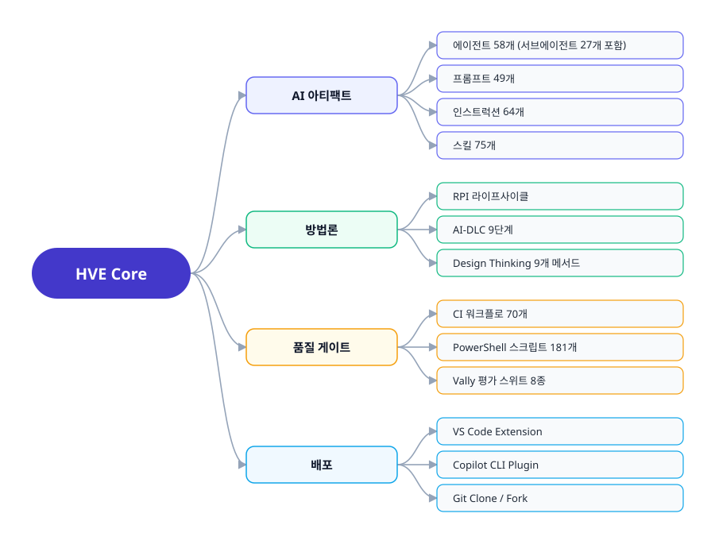
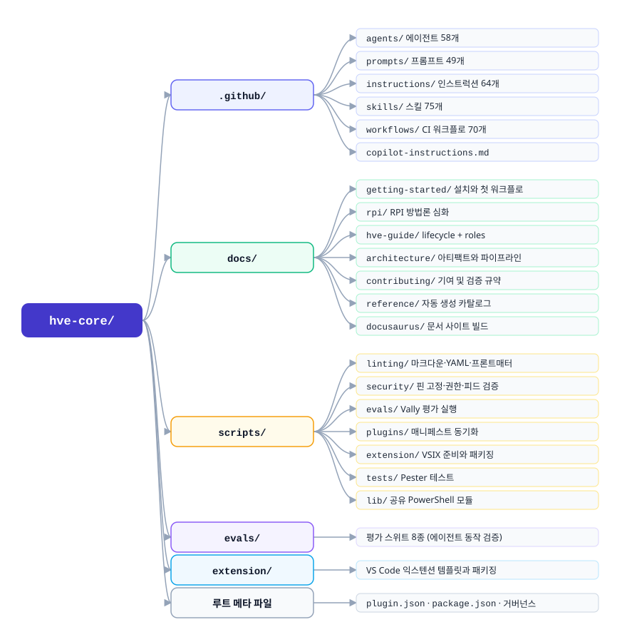
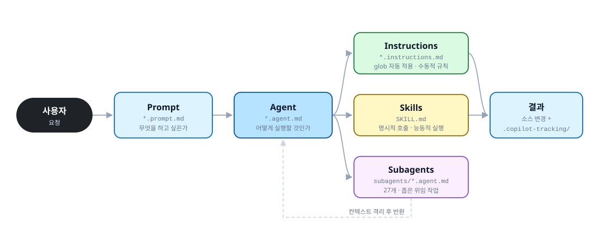
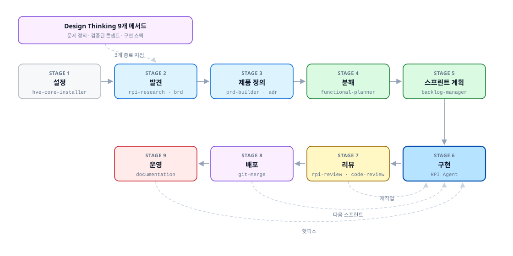
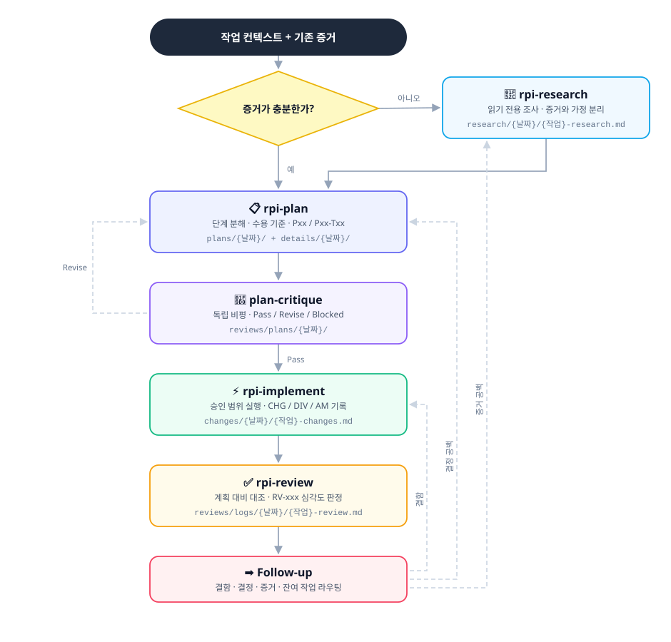
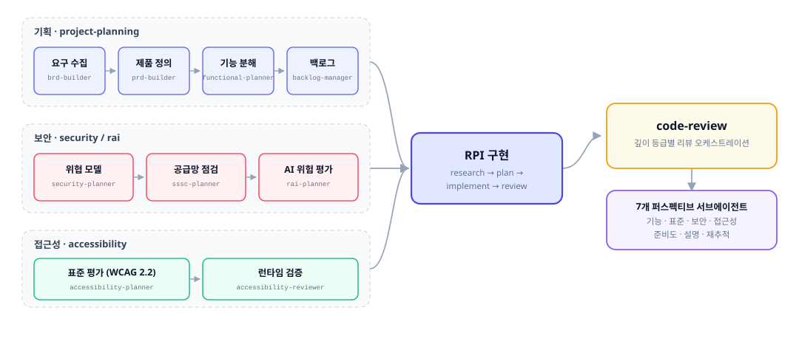
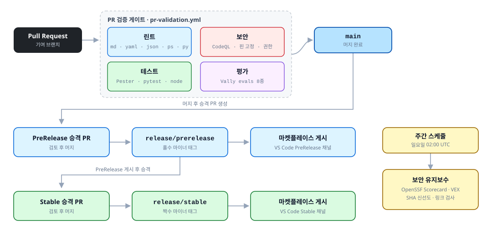
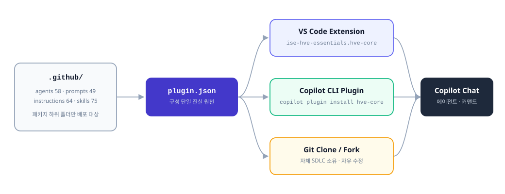
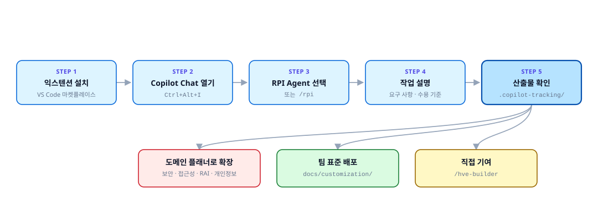

HVE Core
GitHub Copilot을 반복 가능하고 표준에 맞는 방식으로 쓰기 위한
에이전틱 SDLC 프레임워크 구조 브리핑
→ 다음 · ← 이전 · O 목차 · N 노트 · F 전체화면
오늘 다룰 7개 구간
상단 진행 바가 현재 위치를 계속 표시합니다. 구간 이름을 클릭하면 바로 이동합니다.
문제
AI가 왜 "그럴듯한 코드"를 만드는가
구조
HVE Core의 정의와 저장소 지도
아티팩트
4계층 모델과 AI-DLC 9단계
RPI
핵심 방법론과 추적 산출물
범위
도메인 패키지와 Design Thinking
운영
품질 게이트, 배포 채널, 시작하기
정리
가져갈 것 세 가지와 Q & A
18장 · 약 15분
구간당 2분 내외로 진행합니다.
AI는 "그럴듯한 코드"를 최적화한다
간단한 작업은 잘합니다. 12개 파일과 3개 서비스에 걸친 변경을 요청하면, 컴파일도 되고 그럴듯해 보이지만 기존 코드를 깨뜨리는 결과가 나옵니다.
전형적인 실패 시퀀스
- "Azure IoT용 Terraform 모듈 만들어줘"
- AI가 즉시 2000줄을 생성
- 의존성 누락, 변수명 불일치, 폐기된 패턴, 기존 인프라 파손
근본 원인
AI는 조사하는 것과 구현하는 것을 구분하지 못합니다. 코드를 요청하면 코드를 씁니다. 변수 명명 규칙이 기존 모듈과 맞는지 멈춰서 확인하지 않습니다.
"AI writes first and thinks never."
HVE Core는 코드 라이브러리가 아니다
Hypervelocity Engineering Core. 특화된 에이전트, 재사용 가능한 프롬프트, 자동 적용되는 코딩 표준, 검증된 스킬을 하나의 워크플로 시스템으로 묶은 AI 워크플로 자산 집합입니다.

(서브에이전트 27 포함)
슬래시 커맨드
자동 적용 표준
실행 가능 지식
무엇이 어디에 있는가
모든 AI 자산은 .github/ 아래에, 검증 엔진은 scripts/에, 문서는 docs/에 있습니다.

AI 아티팩트 4계층 위임 모델
사용자 요청은 프롬프트에서 출발해 에이전트로 위임되고, 에이전트가 인스트럭션(표준)과 스킬(실행 능력)을 끌어옵니다.

| 계층 | 파일 | 답하는 질문 | 활성화 |
|---|---|---|---|
| Prompt | *.prompt.md | 사용자가 무엇을 하려는가 | 슬래시 커맨드 |
| Agent | *.agent.md | 이 작업을 어떻게 실행할 것인가 | 에이전트 선택기 |
| Instructions | *.instructions.md | 어떤 표준이 적용되는가 | applyTo: glob 자동 |
| Skill | SKILL.md | 어떤 특수 능력이 필요한가 | 명시적 호출 |
가장 흔한 오해: 인스트럭션 vs 스킬
둘 다 마크다운 파일이지만 성격이 정반대입니다. 이 구분을 놓치면 자산을 잘못된 계층에 만들게 됩니다.
Instructions
- 표준과 규칙을 제공
- 파일 경로 glob 매칭으로 자동 적용
- 여러 개가 동시에 겹쳐서 적용됨
- 결과물은 Copilot을 위한 가이던스
Skills
- 실제 행동과 스크립트를 제공
- 필요할 때만 명시적으로 로드
- 자체 완결형 패키지 (스크립트·참조·자산)
- 결과물은 실행된 작업
서브에이전트가 따로 있는 이유
27개 서브에이전트는 부모의 컨텍스트를 오염시키지 않도록 별도 세션에서 실행되고 결과만 돌려줍니다. 코드 리뷰는 이 방식으로 7개 관점을 병렬 실행합니다.
배포 대상 구분
.github/instructions/ 최상위 파일은 저장소 전용이라 배포되지 않습니다. hve-core/, security/ 같은 패키지 하위 폴더에 있어야 배포됩니다.
AI-DLC: 9단계 프로젝트 라이프사이클
설정부터 운영까지 각 단계에 담당 에이전트와 스킬이 매핑되어 있습니다. 리뷰·배포·운영은 구현으로 되돌아오는 피드백 루프를 가집니다.

Design Thinking 9개 메서드는 3개의 종료 지점(문제 정의문 · 검증된 콘셉트 · 구현 스펙)에서 Stage 2로 합류합니다. 역할별 진입 가이드는 엔지니어·테크리드·TPM·보안 아키텍트 등 10종이 준비되어 있습니다.
RPI: 제약이 목표를 바꾼다
Research, Plan, Implement, Review. 구현 단계의 실제 엔진이며 HVE Core에서 가장 널리 쓰이는 방법론입니다.
AI의 사고:
"이 변수명이 적당해 보이네. prefix를 쓰자."
리서치 증거:
"이 저장소의 기존 모듈 12개가 prefix가 아니라 resource_prefix를 쓴다. 확립된 패턴은 variables.tf에 있다."
AI가 지금은 구현할 수 없다는 것을 알면, "그럴듯한 코드" 최적화를 멈추고 "검증된 사실" 최적화를 시작합니다.
읽기 전용 리서치
증거와 가정을 분리하고 출처 위치를 인용합니다. 코드를 쓰지 않습니다.
독립 계획 비평
구현 전에 Pass / Revise / Blocked 판정을 남깁니다.
증거 기반 완료
증거가 있어야만 체크박스가 켜집니다.
리서치는 기본값이 아니라 조건부다
먼저 "증거가 충분한가"를 판단합니다. 충분하면 리서치를 건너뛰고, 공백이 입증될 때만 리서치를 켭니다.

3가지 진입 방법
RPI Agent선택: 라이프사이클 전체를 감싸는 래퍼/rpi-quick: 스킬 기반 전체 흐름- 개별 스킬: 다음 행동이 이미 명확할 때 최소 진입
Follow-up은 새 단계가 아니다
결함은 구현으로, 결정 공백은 계획으로, 증거 공백은 리서치로, 잔여 작업은 별도 항목으로 라우팅할 뿐입니다.
모든 결정이 파일로 남는다
산출물은 .copilot-tracking/(gitignore 대상) 아래 날짜별로 쌓이고, 안정적인 ID 체계로 서로를 참조합니다.
| 단계 | 산출물 경로 | 식별자 |
|---|---|---|
| Research | research/{날짜}/ | 없음 |
| Plan | plans/ + details/ | Pxx, Pxx-Txx |
| Critique | reviews/plans/ | Pass / Revise / Blocked |
| Implement | changes/ | CHG-xxx DIV-xxx AM-xxx |
| Review | reviews/logs/ | RV-xxx |
왜 파일에 남기는가
대화가 50K~200K 토큰으로 커지면 초기 지시(3K)가 최신 편향에 밀려 무시됩니다. 지시를 잊는 게 아니라 우선순위가 낮아지는 것입니다.
그래서 컨텍스트를 /clear로 비워도 작업은 이어집니다. 맥락이 대화가 아니라 디스크에 있기 때문입니다.
도메인 패키지: 무게 중심은 기획과 보안
4계층이 같은 패키지 이름을 공유합니다. 아래 분포가 저장소가 실제로 어디에 투자했는지 보여줍니다.
| 패키지 | 에이전트 | 프롬프트 | 인스트럭션 | 스킬 |
|---|---|---|---|---|
project-planning | 14 | 0 | 7 | 15 |
security | 10 | 15 | 6 | 13 |
coding-standards | 9 | 0 | 14 | 2 |
hve-core | 6 | 11 | 8 | 9 |
design-thinking | 2 | 15 | 1 | 6 |
accessibility | 4 | 1 | 2 | 1 |
rai · privacy | 5 | 3 | 3 | 1 |
rpi | 0 | 0 | 0 | 8 |
| 기타 (실험·공유·설치·DS) | 8 | 4 | 23 | 20 |
| 합계 | 58 | 49 | 64 | 75 |

보안 커버리지
OWASP Top 10 · LLM · Agentic · MCP · CI/CD · Docker · Infrastructure 전 시리즈에 더해 STRIDE 위협 모델링, SLSA·SBOM 공급망, OpenVEX 취약점 트리아지까지 포함합니다.
Design Thinking: 잘못된 문제를 풀지 않기 위해
9개 메서드를 3개 공간으로 나누고, 공간마다 요구하는 완성도를 다르게 정의합니다.
🔍 문제 공간
범위 대화 · 디자인 리서치 · 입력 종합
거칠고 탐색적인 산출물. 답을 내지 않고 "누구의 무슨 문제인가"만 확정합니다.
💡 솔루션 공간
브레인스토밍 · 사용자 콘셉트 · 저충실 프로토타입
다듬는 것을 명시적으로 금지합니다. 예쁘게 만들면 이해관계자가 비판을 못 하기 때문입니다.
🔧 구현 공간
고충실 프로토타입 · 사용자 테스트 · 규모 확장
기능적으로 엄밀하되 시각적 광택은 없는 상태를 유지합니다.
rpi-research로 넘깁니다. RPI 쪽에서 가정이 틀렸다고 판단하면 메서드 1로 되돌립니다.
프롬프트도 CI로 검증한다
70개 워크플로가 PR 검증, 보안 스캔, 릴리스 사다리를 담당합니다. 문서와 스크립트만으로는 프롬프트 품질을 보장할 수 없기 때문에 별도 평가 스위트를 둡니다.

| 평가 스위트 | 검증 대상 |
|---|---|
skill-quality | 스킬 설명 및 활성화 품질 |
agent-behavior | 에이전트 동작 일관성 |
agent-conformance | 플래너 6종의 단계 준수 |
behavior-conformance | 프롬프트·인스트럭션·스킬 동작 |
baseline-equivalence | 커스터마이즈 전후 동등성 |
공급망 보안
모든 GitHub Action은 SHA로 핀 고정되고, OpenSSF Scorecard·CodeQL·gitleaks·pip-audit이 주간으로 돌며, 릴리스 VSIX에는 서명된 프로비넌스가 붙습니다.
세 가지 경로로 배포된다
구성 목록의 단일 진실 원천은 루트 plugin.json입니다. 같은 자산 집합이 익스텐션, CLI 플러그인, 클론으로 나갑니다.

| 채널 | 대상 |
|---|---|
| VS Code Extension | 개별 개발자, 팀 표준 배포 |
| Copilot CLI Plugin | 터미널 중심 워크플로 |
| Git Clone / Fork | 자체 SDLC를 소유하려는 팀 |
릴리스 사다리
프리릴리스는 홀수 마이너, 스테이블은 짝수 마이너 버전을 씁니다.
5분 안에 시작할 수 있다

VS Code
마켓플레이스에서 ise-hve-essentials.hve-core 설치 → Ctrl+Alt+I → 에이전트 선택기에서 RPI Agent
Copilot CLI
copilot plugin marketplace add microsoft/hve-core
copilot plugin install hve-core@hve-core
/rpi-research를 한 번 돌려보기. 5분이면 되고, 리서치 산출물이 어떻게 생겼는지 바로 감이 옵니다.
가져갈 것 세 가지
제약이 품질을 만든다
AI에게 더 많은 자유를 주는 게 아니라, 조사와 구현을 분리해 지금 할 수 없는 일을 정해주는 것이 핵심입니다.
맥락은 파일에 산다
대화는 길어질수록 열화합니다. 결정·증거·변경을 디스크에 남기면 언제든 컨텍스트를 비우고 이어갈 수 있습니다.
AI 자산도 검증 대상
프롬프트·에이전트·스킬을 린트하고 테스트하고 평가하는 파이프라인이 있어야 팀 규모로 확장됩니다.
이 브리핑
- 저장소 및 상세 문서
- README 전체 브리핑 (11개 섹션)
- 다이어그램 9종은
assets/에 SVG로 제공 - 수치는 2026-09-02
main스냅샷 기준
감사합니다
HVE Core는 정답이 아니라 패턴의 원천입니다.
포크해서 여러분의 SDLC로 만드는 것이 저장소의 공식 권고입니다.
© Microsoft Corporation · MIT License